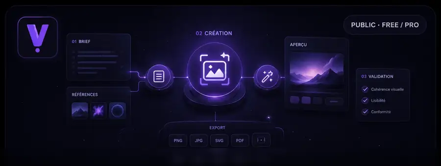
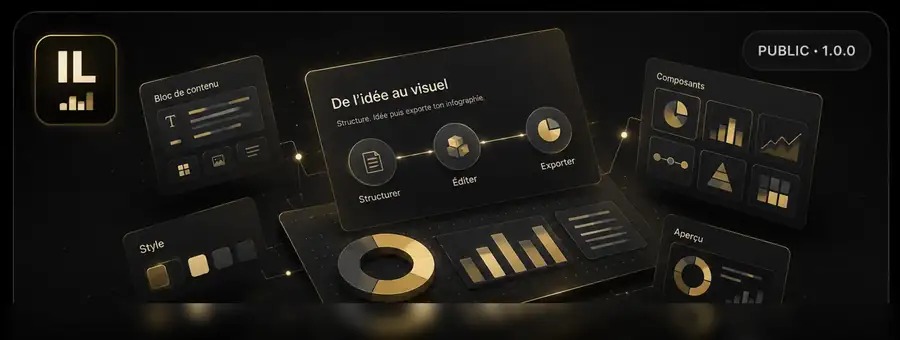
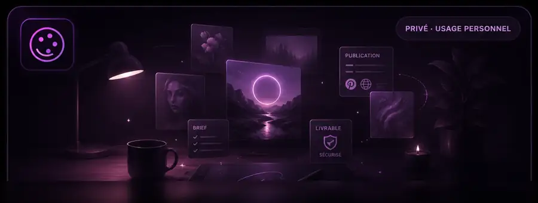
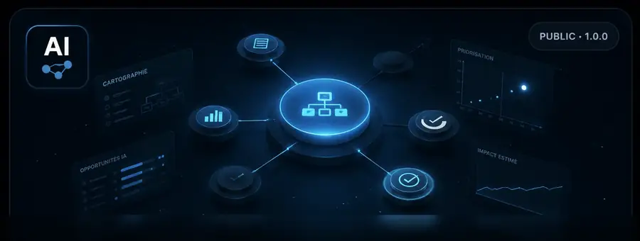

Visual workflow
Visual AI Studio
Un studio web Docker local-first pour cadrer, contrôler et exporter une création visuelle assistée, avec Studio Visuel et IA-Art séparés dans ChatGPT.
ETORRENT-ORG · LOCAL-FIRST · HUMAN CONTROL
Des applications autonomes pour créer et visualiser sans transformer chaque besoin en plateforme. Un produit, un usage, un contrôle explicite par l'utilisateur.
PRODUCT LANDSCAPE
Visual AI Studio et Infographic Lab constituent le périmètre public actif. IA-Art reste mon environnement personnel de création et de publication. AI Process Studio est désormais retiré et conservé uniquement comme historique.

Visual workflow
Un studio web Docker local-first pour cadrer, contrôler et exporter une création visuelle assistée, avec Studio Visuel et IA-Art séparés dans ChatGPT.

Structured visuals
Une stable 1.0.0 pour l’infographie éditable et une préversion Augmented V2 intégrée pour décliner un même modèle vers Infographie, Mermaid, Mindmap et Markdown.

PRIVÉ · USAGE PERSONNELPersonal visual publishing
Mon studio personnel pour préparer, contrôler et publier mes créations visuelles sur Instagram. Le workflow courant s’appuie sur Visual AI Studio, Studio Visuel et le Skill IA-Art ; l’ancien site Pinterest reste uniquement une archive historique.

RETIRÉ · ARCHIVEHistorical process intelligence
La distribution Community et l’offre Professional ont été retirées le 24 août 2026. La page publique est conservée uniquement comme archive de la dernière baseline 1.1.2 ; aucune nouvelle release ou offre commerciale n’est active.
DESIGN PRINCIPLES
Pas de socle imposé avant de résoudre le problème. Chaque application reste simple à comprendre, tester et faire évoluer.
Les données et composants critiques restent maîtrisables localement ; les services externes n'interviennent que lorsqu'ils apportent une valeur claire.
L'IA structure, propose ou accélère. Les validations importantes restent visibles et assumées par l'utilisateur.
OPEN DEVELOPMENT
Les produits publics actifs sont documentés séparément, avec leurs versions, contraintes et modes d'installation.